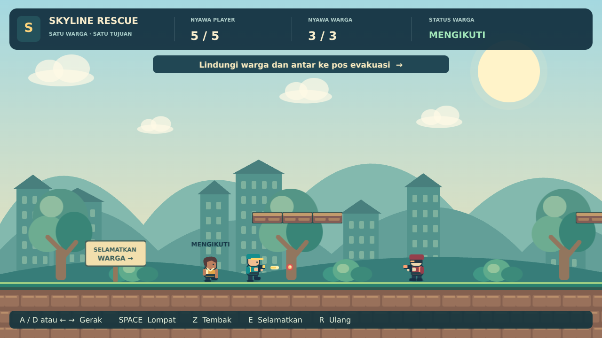

Buka game.json di GDevelop untuk mengedit objek, level, dan seluruh event.
Mulai dari tiga mekanik inti
- Tembak. Player bergerak dengan A/D atau panah, melompat dengan Space, dan menembak dengan Z.
- Selamatkan. Tekan E di dekat warga. Status warga berubah dari
waitingmenjadifollowing. - Kawal. Warga mengikuti player di tanah rata. Ketika menyentuh goal, statusnya menjadi
safe. Player juga harus berada di goal untuk menang.
Player memiliki 5 HP, warga 3 HP, dan musuh 2 HP. Satu peluru memberi 1 damage. Nyawa player atau warga habis berarti kalah. Tekan lalu lepaskan R untuk mengulang.
Apa yang disederhanakan?
| Bagian | Skyline Rescue sebelumnya | Versi ini |
|---|---|---|
| NPC | Tiga warga dengan antrean, ID, dan lompatan otomatis. | Satu warga dengan pemeriksaan jarak horizontal. |
| AI musuh | Bergerak, memilih target, menembak, dan memukul. | Diam, menghadap player, menembak berkala. |
| Level | Jurang dan rintangan di jalur utama. | Tanah rata; platform atas untuk lompatan opsional. |
| Progres | Koin, medkit, penghitung warga dan musuh. | HP dan status satu warga. |
| Struktur event | 108 baris event. | 51 baris event dalam enam kelompok. |
Cara membaca visual scripting
Buka scene Game, lalu tab Events. Kolom kiri berisi kondisi, kolom kanan berisi aksi. GDevelop mengevaluasi event dari atas ke bawah setiap frame. Semua kondisi pada satu event harus benar; kondisi OR cukup salah satunya. Subevent juga harus memenuhi kondisi event induknya.
Rumus seperti Player.CenterX() dimasukkan pada kolom ekspresi di event editor. Angka pusat objek dipakai agar perbandingan posisi tidak bergantung pada lebar sprite. TimeDelta() adalah waktu antarframe dalam detik.
Behavior dan variabel
| Objek / lingkup | Pengaturan |
|---|---|
| Player | Behavior Platformer character, bernama Platformer. Abaikan kontrol bawaan; kecepatan maksimum 260. Variabel: HP = 5, Facing = 1, ShootCD = 0, Invuln = 0. |
| NPC | Behavior Platformer character, bernama Platformer. Abaikan kontrol bawaan; kecepatan maksimum 280. Variabel: HP = 3, State = "waiting" bertipe teks, Invuln = 0. |
| Enemy | Tanpa behavior gerak. Dua instance memakai objek yang sama. Variabel: HP = 2, Facing = -1, ShootCD = 1.2. |
| Peluru | PlayerBullet.Life = 0.9 dan EnemyBullet.Life = 2.5. Kecepatan diatur lewat aksi gaya permanen. |
| Terrain | Grup berisi Ground dan Platform. Ground: platform normal. Platform atas: jump-through. |
| Scene | Satu variabel teks: GameState = "playing". Nilai lain: "win" dan "lose". |
01 · Player bergerak dan menembak
Kelompok 01_PLAYER. Mekanik berjalan selama GameState = "playing".
| Kondisi | Aksi |
|---|---|
| Awal scene. | Sembunyikan overlay hasil dan tetapkan posisi vertikal kamera. |
| Setiap frame saat bermain. | Kurangi ShootCD dan Invuln dengan TimeDelta(); batasi minimum 0. |
| A atau panah kiri ditekan. | Simulate left key untuk Player; Facing = -1; balik sprite secara horizontal. |
| D atau panah kanan ditekan. | Simulate right key; Facing = 1; kembalikan arah sprite. |
| Space ditekan. | Simulate jump key untuk Player. |
Z ditekan dan ShootCD ≤ 0. | Buat PlayerBullet di depan player. Tambahkan gaya X = Player.Variable(Facing) * 680, Y = 0, permanen. Set ShootCD = 0.25. |
Facing tetap menyimpan arah terakhir meskipun player berhenti. Cooldown 0,25 detik membuat tombol Z bisa ditahan tanpa menciptakan peluru setiap frame.
02 · AI musuh: deteksi dan tembak
Kelompok 02_ENEMY. AI cukup memakai posisi player dan satu cooldown. Di bawah kondisi bermain, gunakan event For each Enemy agar tiap instance memiliki jedanya sendiri.
| Kondisi di dalam For each Enemy | Aksi |
|---|---|
| Setiap frame. | Set ShootCD ke max(0, Enemy.Variable(ShootCD) - TimeDelta()). |
Player.CenterX() ≥ Enemy.CenterX(). | Facing = 1; hadap kanan. |
Player.CenterX() < Enemy.CenterX(). | Facing = -1; hadap kiri. |
Enemy masih hidup; abs(Player.CenterX() - Enemy.CenterX()) < 550; ShootCD ≤ 0. | Buat EnemyBullet di depan musuh. Tambahkan gaya X = Enemy.Variable(Facing) * 300, Y = 0, permanen. Set ShootCD = 1.25. |
Di luar jangkauan, musuh hanya menghadap player. Saat player dekat, musuh menembak horizontal. Peluru tersebut tetap bisa mengenai warga yang berada di lintasannya. Dengan demikian, player perlu melindungi warga meskipun musuh hanya menentukan arah berdasarkan player.
03 · Tabrakan peluru dan nyawa
Kelompok 03_DAMAGE. Peluru diproses satu per satu dengan For each.
| Kondisi | Aksi |
|---|---|
| Setiap frame untuk setiap peluru. | Kurangi Life dengan TimeDelta(). |
Life ≤ 0 atau peluru mengenai Terrain. | Set Life = 0, lalu hapus peluru. |
| PlayerBullet masih aktif dan mengenai Enemy hidup. | Pilih musuh terdekat yang bertabrakan; kurangi HP-nya 1; set Life = 0 dan hapus peluru. |
| EnemyBullet masih aktif dan mengenai Player, atau NPC yang belum safe. | Jika target Invuln ≤ 0, kurangi HP 1 dan set Invuln = 1. Setelah itu konsumsi peluru, termasuk jika target sedang kebal. |
Enemy memiliki HP ≤ 0. | Hapus Enemy. |
Peluru player tidak memiliki event damage terhadap NPC. Pengecekan Life > 0 mencegah peluru yang sudah dikonsumsi melukai target lain pada frame yang sama. Kebal sementara selama satu detik mencegah nyawa habis akibat beberapa tabrakan berdekatan.
04 · NPC: menunggu, mengikuti, aman
Kelompok 04_NPC. Semua event ini memerlukan keadaan bermain serta HP player dan NPC di atas 0. Karena hanya ada satu NPC, tidak perlu ID, nomor antrean, atau penghubung antarobjek.
| Kondisi | Aksi |
|---|---|
State = "waiting"; E ditekan; selisih pusat X kurang dari 100 dan selisih pusat Y kurang dari 80. | Set State = "following"; mainkan suara penyelamatan. |
State = "following" dan NPC.CenterX() < Player.CenterX() - 80. | Simulate right key untuk NPC; hadap kanan. |
State = "following" dan NPC.CenterX() > Player.CenterX() + 80. | Simulate left key untuk NPC; hadap kiri. |
| Jarak horizontal sudah berada dalam 80 piksel. | Tidak ada event gerak yang memenuhi kondisi. NPC berhenti melalui deselerasi behavior Platformer. |
State = "following" dan NPC menyentuh Goal. | Set State = "safe"; nonaktifkan behavior Platformer NPC; gunakan animasi diam. |
Contoh: pusat player di X = 600 dan NPC di X = 450. Selisihnya 150, sehingga NPC bergerak ke kanan. Ketika jaraknya sudah masuk batas 80, input gerak berhenti; deselerasi membuat jarak akhir sedikit lebih pendek. NPC juga bisa mengikuti kembali ke kiri ketika player berbalik.
05 · Goal, kalah, dan restart
Kelompok 05_GOAL_RESTART. Event kalah ditempatkan sebelum event menang.
| Kondisi | Aksi |
|---|---|
| Masih bermain; HP player atau NPC habis. | Set GameState = "lose". |
Masih bermain; kedua karakter hidup; NPC safe; Player menyentuh Goal. | Set GameState = "win". |
| Win atau lose; Trigger once. | Tampilkan teks hasil dan suara. Munculkan overlay, hentikan behavior karakter, dan hapus peluru. |
| Tombol R dilepas. | Ganti scene ke "Game" untuk membuat ulang seluruh keadaan awal. |
Player tidak dapat menang dengan meninggalkan warga. Pemeriksaan GameState = "playing" dan HP positif memastikan kematian tidak tertimpa kemenangan pada frame yang sama.
06 · Tampilan dan kamera
Kelompok 06_TAMPILAN menampilkan HP, status warga, petunjuk, dan animasi. HUD berada di layer UI. Dunia mengikuti kamera dengan batas horizontal; satu label NPC mengikuti posisinya. Player dan NPC berubah transparan saat Invuln > 0.
Kelompok ini membaca hasil mekanik. Saat belajar, mulailah dari kelompok 01–05, lalu lihat bagaimana perubahan variabel muncul di layar melalui kelompok 06.
Latihan mengubah proyek
- Ubah batas mengikuti dari 80 menjadi 120 pada dua kondisi NPC. Jalankan Preview dan amati jaraknya saat player berhenti.
- Ubah cooldown musuh dari 1,25 menjadi 2 detik. Bandingkan jeda serangannya.
- Tambahkan satu instance Enemy pada tanah di Scene Editor. Event For each otomatis memberikan cooldown terpisah.
Untuk perubahan HP, sesuaikan nilai awal variabel dan angka maksimum yang ditulis pada event HUD. Untuk peluru, ubah Life pada variabel objek dan kecepatan pada aksi gaya.